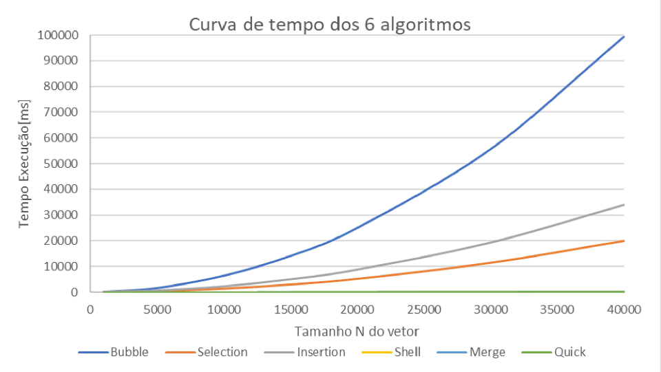

Métodos de Ordenação

Descrição do Projeto
É fato que um algoritmo eficiente é mais impactante que uma máquina potente. Porém, como podemos provar? Esse projeto contêm a um arquivo em c++ que realiza a contagem em milisegundos da execução de 6 métodos de ordenação famosos: Bubble Sort, Insertion Sort, Selection Sort, Shell Sort, Merge Sort e Quick Sort.
Como conhecemos, os três primeiros apresentam complexidade O(n^2), ou seja, no pior caso terão que percorrer o tamanho do vetor ao quadrado. Nesse sentido, os três últimos foram capazes de quebrar essa barreira, operando em O(nlogn). No gráfico abaixo, podemos observar o quão estrondosa é a diferença dos métodos.

Abaixo está disponibilizado o código utilizado para a análise das complexidades de cada método.
← Voltar ao portfolio